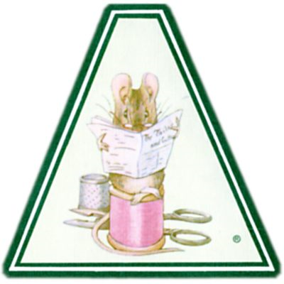
こりゃ １まい かがみでも 買って
ふくやを ２，３にん よんでみようか。
ふくやを ２，３にん よんでみようか。
――リチャード３せい
フリーダちゃん
おとぎ話が 大すきだけど、 ねこんでいる あなたのために、 このお話を まるまる 作りました ―― まだ だれも 読んでいない 新しい お話です。
このお話の いちばん ふしぎなところは ―― わたしが グロスターで 耳にした ほんとの話だと いうことです。 ふくやさんのこととか、 チョッキのこととか、 「糸が 足りない」のところとかはね！
１９０１年 クリスマス
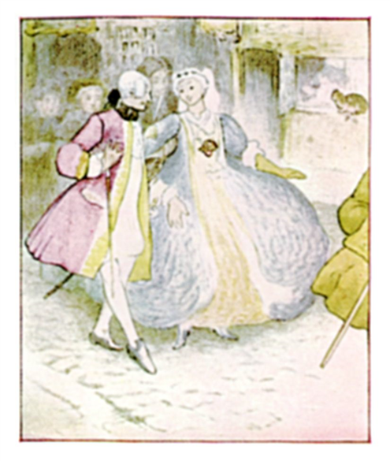
つるぎと カツラが まだ あって、 コートの すそが 長くて、 花がらの ひらひらの ついていた むかし、 男の人も ひだや ふさの ついた きらびやかな きぬの チョッキを きていた むかしのこと、 グロスターに ふくやさんが おりました。
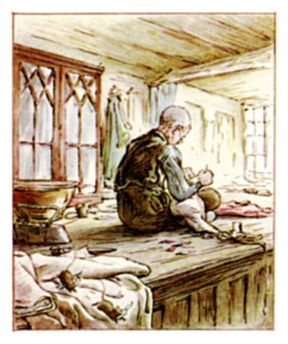
その人は、 町の 西門に かまえた ちいさな お店の まどぎわで、 さぎょう台の上に あぐらを かいて、 朝から ばんまで すわっていました。
日の あるうちは、 ずっと ぬったり 切ったり、 いろんな ぬのの 生地を ぬいあわせておりまして。 サテン、 ポンパドゥール、 ラストリン、 生地にも それぞれ かわった 名前が あって、 どれも このお話の おこったころには、 とても ねうちの あるものでした。
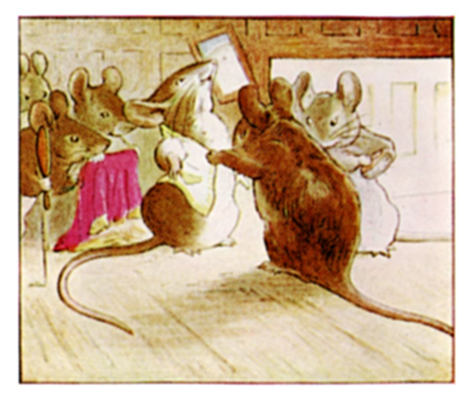
ところが ご近じょの おきゃくさんには 上ものの きぬを ぬうのに、 そのひとは とてもとても まずしくて ―― そのこがらな メガネおじいさんは、 やつれた顔、 まがったゆび、 すりきれた 上下のふくと いうありさま。
ぬいとりの ぬのに 合わせて、 むだなく ふくの かたちを たち切りましたから、 さぎょう台の上に ちらかるのは、 ほんの少しの 切れはしだけ ――「はしきれすぎて、 どうにもならない ―― ネズミの チョッキには なるくらいだ。」と ふくやさんは 言います。
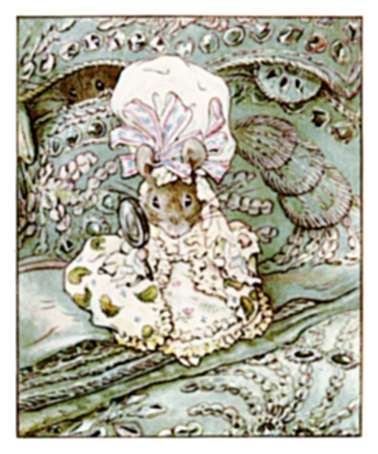
クリスマスも 近づいた ある さむさも きびしい日、 ふくやさんは コートを 作りはじめました ―― パンジーや バラの ししゅう入りの さくらんぼ色した うねおりの きぬの コートと、 クリーム色した サテンの チョッキ ―― ゴーズと 緑の ウーステッドの シニョール糸で かざりつけられていて ―― グロスターの 町長のための あつらえものです。
ふくやさんは はたらきづめで、 ひとりごと。 きぬを すんぽう 取って、 くるくる 回して、 大ばさみで かたどおりに 切りととのえていきました。 さぎょう台じゅうに、 さくらんぼ色の 切れはしが とっちらかります。
「あまりは なし、 たち合わせも ばっちり、 それ あまりは なしだ、 あっても ネズミの かたかけ、 小ものの リボンが できるだけ！ できるだけ！」と グロスターの ふくやさんは 言いました。
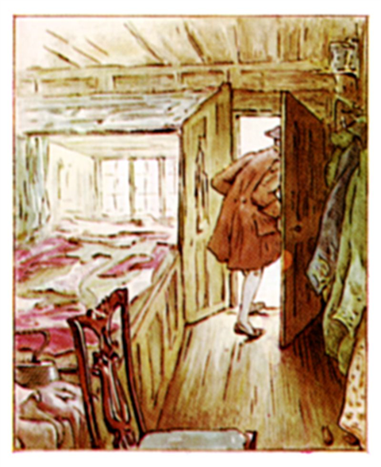
雪が ひらひらと、 かたい わくの ちいさな ガラスまどに ふりつもって、 ようやく 光を さえぎるころに、 ふくやさんは その日の しごとを おえます。 きぬと サテンが みんな 切りとられたまま、 さぎょう台の上に おかれました。
コート用に １２きれ、 チョッキ用に ４きれ、 ポケットの たれと カフスと ボタンが、 みんな きっちりと ならんでいます。 コートの うらじに 上ものの 黄色の タフタが あって、 チョッキの ボタンあなには さくらんぼ色の かがり糸、 こうして みんな 朝に ぬいあわせる だんどりが できたわけで、 すんぽう よしで せいぞろい ―― あとは さくらんぼ色の きぬの より糸が、 １かせ 足りないだけです。
ふくやさんは 夕ぐれに お店を あとに しました。 夜の ねどこは べつのところなので、 まどを しめて 戸じまり。 かぎも 持って さようなら。 夜には だれも そこに いないわけなのですが、 ただ ちいさな 茶ネズミだけは おりまして、 かぎも なく ちょろちょろ 出入りするのです。
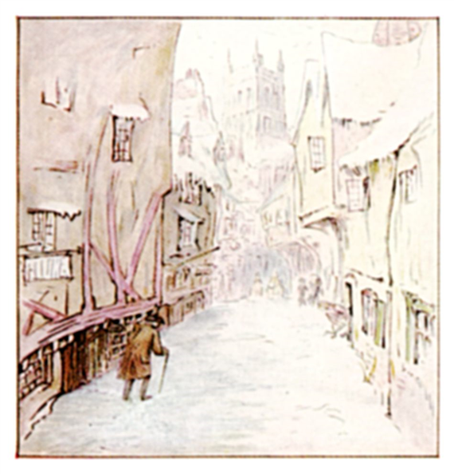
グロスターの 古い おうちには、 どこでも 木の かべうらに、 ちいさな ネズミ用の かいだんと、 かくしとびらが ありました。 そうして ネズミたちは、 家から 家へ、 長く せまい つうろを 通って、 ちょろちょろ。 おもてに 出ることなく、 まちじゅう どこでも 行けるのです。
ところが ふくやさんは お店を 出て、 雪のなか よたよたと おうちまで 歩きます。 すまいは 大学広場の ほど近く、 大学森への 道の すぐとなりで、 大きな家では ないのですが、 まずしい ふくやさんは、 その台どころだけ かりていました。
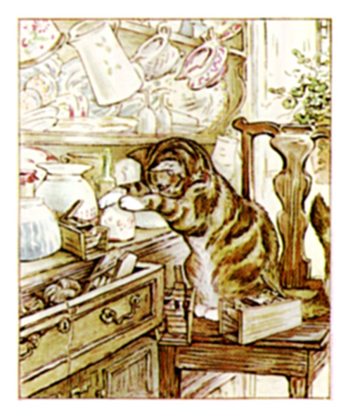
いっしょに くらしているのは ネコだけで、 名前は シンプキン。
ふくやさんが はたらきに 出ている 日中、 ずっと シンプキンは ひとりで おるすばん。 やっぱり ネズミが 大すきなのですが、 こちらは やつらに コート用の ぬのを あげたりはしません。
「みゃう？」と、 ネコは ふくやさんが ドアを あけるなり すぐ、 「みゃう？」
ふくやさんの おへんじは ――「シンプキン、 そのうち わしらも 金持ちに なる、 だが とりあえず わしは 糸が ほつれるくらい へとへとだ。 さあ この小さな ぎんかを もって（これが ちょうど どうか４まい分、 なけなしの お金でした）、 それと シンプキン、 土びんを くわえてな。 どうか１まい分の パンと、 １まい分の 牛にゅうと １まい分の ソーセージを 買ってくるんだ。 ええと、 おお シンプキン、 もう どうか４まい分しか ないが、 あと１まい分で、 さくらんぼ色の きぬ糸を たのむ。 このさいごの １まい分を わすれるんじゃないぞ、 シンプキン、 さもなきゃ できあがらんし、 わしゃ へとへとなんだ、 なんなら『より糸が 足りん！』」
すると シンプキンが また 「みゃう？」と ないて、 ぎんかと 土びんを もつと、 くらがりのなかへ 出ていきました。
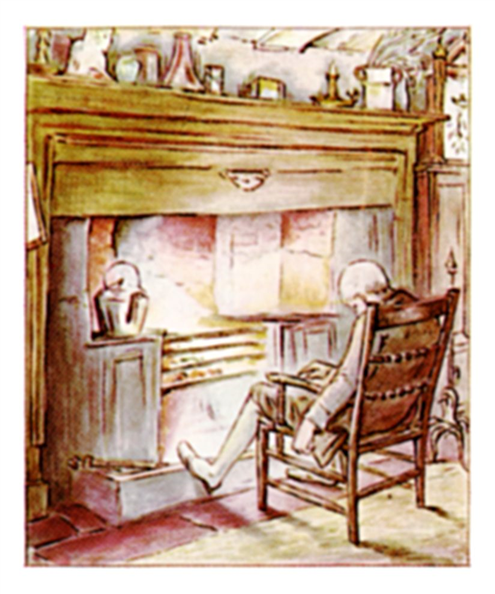
あまりに くたびれた ふくやさんは、 もう ぐあいが わるくなっていました。 だんろのそばに こしを 下ろして、 あのすてきな コートのことを ひとり ぶつぶつ。
「そのうち 金持ちに なるさ ―― ぬのを ばさっと たって ―― グロスターの 町長が クリスマスの 日の 朝、 けっこんすることに なったって、 コートと ししゅう入りの チョッキを まかせてくれたんだ ―― うらじは 黄色 ―― つやつやの ぬのも しっかり ある、 のこるのは ネズミに かたかけを 作ってやれるくらいの 切れはしだけだ ――」
そこで、 はっとする ふくやさん。 というのも、 いきなり じゃまと いいますか、 台どころのうらにある 戸だなから ちいさな もの音が たてつづけに したものですから ――
ちっぷたっぷ、 ちっぷたっぷ、 ちっぷたっぷちっぷ！
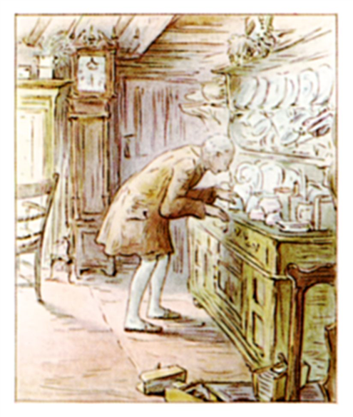
「なんだ 今のは？」と、 グロスターの ふくやさんは いすから とびあがります。 戸だなには、 とうきや 土なべ、 ティーカップや マグで いっぱいですが。
ふくやさんは むかいの 台どころへ 行って、 戸だなのわきに すっと 立って、 耳を すましながら、 メガネの おくから のぞきこみました。 また、 ティーカップの下から おかしな ちいさな もの音が ――
ちっぷたっぷ、 ちっぷたっぷ、 ちっぷたっぷちっぷ！
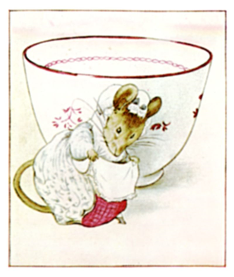
「こりゃ みょうだぞ。」と グロスターの ふくやさんは、 さかさに なっていた ティーカップを 持ち上げます。
すると 出てきたのは、 まさに ちいさな ネズミの ごふじん、 しかも ふくやさんに すそを つまみながら あいさつを しまして！ そのあと ひょいっと 戸だなから とびおりて、 かべのうらに さようなら。
ふくやさんは だんろのそばに すわりなおして、 かわいそうに ひえた手を あたためながら、 ぶつぶつと ひとりごと ――
「チョッキは もも色の サテンから たってある ―― バラの つぼみの ししゅうは、 きれいな きぬ糸で。 はたして なけなしの お金を シンプキンに あずけて よかったのやら。 ２１の ボタンあなが、 さくらんぼ色の より糸だとは！」
ところが たちまち、 戸だなの ところから またもや ちいさな もの音が。
ちっぷたっぷ、 ちっぷたっぷ、 ちっぷたっぷちっぷ！
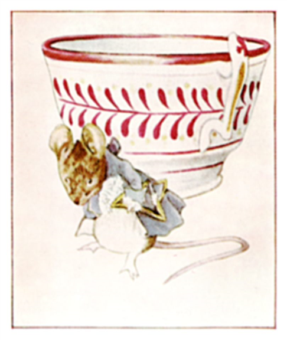
「こりゃ とんでもない！」と グロスターの ふくやさんが、 もうひとつ さかさに なっていた ティーカップを ひっくりかえしてみると。
こんど 出てきたのは、 まさに ちいさな ネズミの だんなさま、 しかも ふくやさんに ぼうしを 取って おじぎをしまして！
そのあと 戸だなの あっちこっちから、 いっせいに こまかな もの音が うわっと なりだして、 あっちが なれば こっち、 むしくいまどの シバンムシみたいに。
ちっぷたっぷ、 ちっぷたっぷ、 ちっぷたっぷちっぷ！
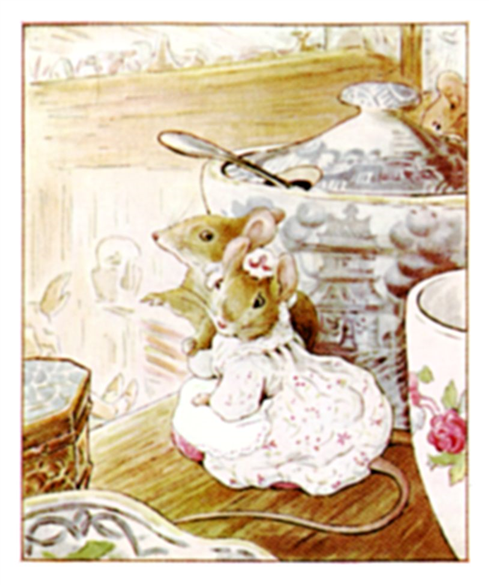
もう カップの下から、 おわんの下から、 はちの下から、 ちょろちょろ わらわら ネズミさんたちが とびだしてきて、 みんな 戸だなから おりて、 かべのうらに さようなら。 ふくやさんは、 だんろの まぢかに すわりこんで、 ぼやきます ――「２１の ボタンあなが、 さくらんぼ色の きぬとは！ 土曜の 昼までに 終わらんと。 今は、 火曜の 夜だ。 ネズミを にがして よかったものか、 どう見ても シンプキンが 取っておいた ものだが。 ああ、 まだ しあがらん、 なんなら 『より糸が足りない！』」
また 出てきた ネズミさんたちが ふくやさんの 言うことに 耳を すませていました。 みんな あのすてきな コートの がらが 気に なっていたのです。 つやつやの うらじや、 ネズミさん用の かたかけのことを、 みんなして ひそひそ。
そのときでした、 いっせいに みんな 動き出して、 ぬけ道を 通って かべうらへ。 ちゅうちゅう おたがいに 声かけあいながら、 おうちから おうちへ 走っていきます。 そうして シンプキンが、 牛にゅうの 入った びんを 持ってかえってくる ころには、 ふくやさんの 台どころには ネズミ １ぴき のこっていません。
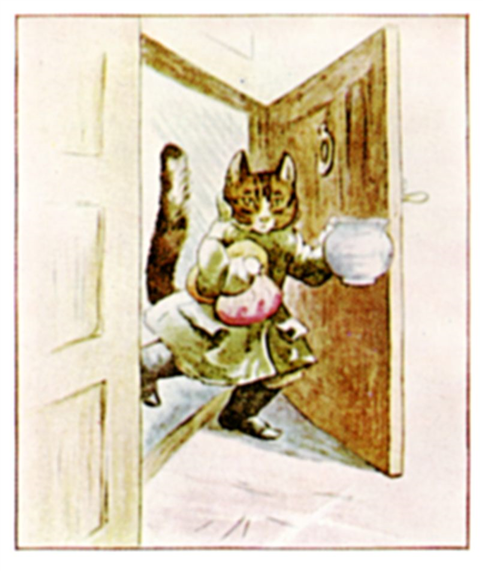
ドアを あけて とびこんできた シンプキンは、 「ぐーるーるー みゃう！」と うなっており、 まるで いきり立った ネコのよう。 だって 大の雪ぎらい、 耳のなかには 雪が 入るし、 首もとの えりにも 雪が つもりますし。 戸だなに パンと ソーセージを おくと、 あたりを くんくん。
「シンプキン、」と ふくやさん。「たのんだ 糸は どうした？」
でも シンプキンは、 牛にゅうの びんを 戸だなに すえると、 ティーカップが おかしいと じろじろ ながめまして。 ごはんに ころころした ネズミが ほしいところだったのに。
「シンプキン、」と ふくやさん。「わしの 糸は どうした？」
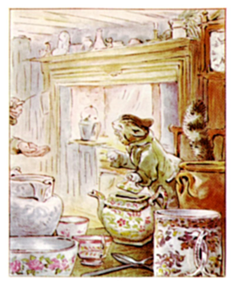
ところが シンプキンは ティーポットへ ひそかに こづつみを かくし、 ふくやさんに フーッ ゴロゴロと うなります。 もし シンプキンに ものが 言えたら、 こんな かんじでしょうか。「ぼくの ねずみは どうした？」
「ああ、 しあがらん！」と グロスターの ふくやさんは しょげながらも ベッドへ。
それから ひとばんじゅう シンプキンは 台どころを さがしまわり、 戸だなのなかや ゆか下、 そして 糸を かくした ティーポットのなかなどを のぞきこみます。 でも それでも ネズミは 見あたりません！
ふくやさんが ねごとで ぶつぶつ ぼやくたびに、 シンプキンは 「みゃうー がるーるーるーうー しーしゅーっ！」と ネコが 夜 よくやるような、 へんな ぞくっとする なきかたを するのです。
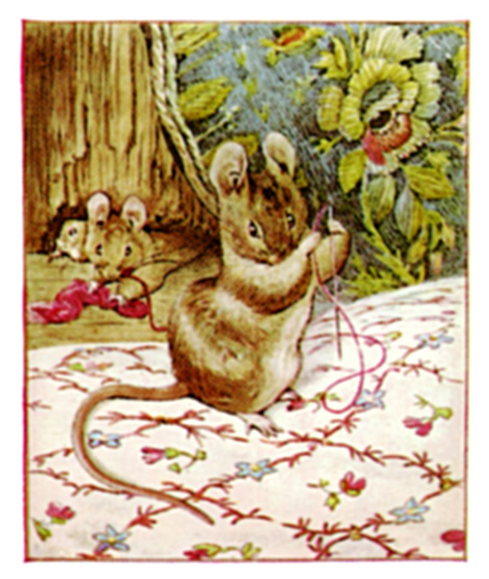
それも そのはず、 かわいそうに、 そのふくやの おじいさんは ぐあいが ひどく わるく、 ねつも あって、 うなされ ベッドで もだえていたのですから。 ゆめのなかで ずっと うわごと ――「糸が 足りない！ 糸が 足りない！」
その日は ずっと ねこんでしまい、 そして つぎの日も、 そのまた つぎの日も。 このままでは あのさくらんぼ色の コートは どうなってしまうのでしょう。 西門通りの ふくやさんの お店では、 ししゅうされた シルクと サテンの ぬのが さぎょう台に おかれたまま ―― ２１ある ボタンあなも 手つかず ―― まども しまっていて、 ドアも かたく 戸じまりされていると あっては、 これでは だれも ぬのの ぬいあわせを することが できません！
でも それでも だいじょうぶなのが いましたね、 そう、 茶ネズミさんたち。 かぎなんか なくても、 グロスターじゅうの おうちに 出入りできるのです！
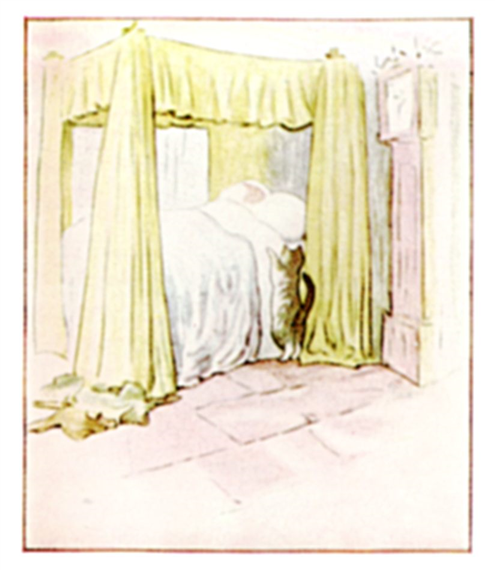
おうちを 出て 市場へ ゆく人の むれ、 雪のなかを 足どり 重く、 ガチョウを 買いに 行ったり、 クリスマスの パイを 焼いてもらったり。 でも まったく クリスマスの ごちそうには ありつけない シンプキンと かわいそうな グロスターの ふくやの おじいさん。
ふくやさんは ３日３ばん ねこんでしまいました。 そうして やってきた クリスマスイヴ、 夜も たいへん ふけたころ。 月が やねや えんとつの はるか上に のぼって、 大学広場の 門がまえの あたりを 見下ろしています。 まどには あかりも なく、 どの おうちにも もの音 ひとつ ありません。 グロスターの 町じゅうが ぐっすり ねむっていました。
しかし むかし話と なれば、 クリスマスイヴの 夜から クリスマスの 朝に かけては、 どんな けものも おしゃべりできるもの（とはいえ その声を 聞いたり 言ってることが わかったり する人は ほんの少しも いないわけですけれども）。
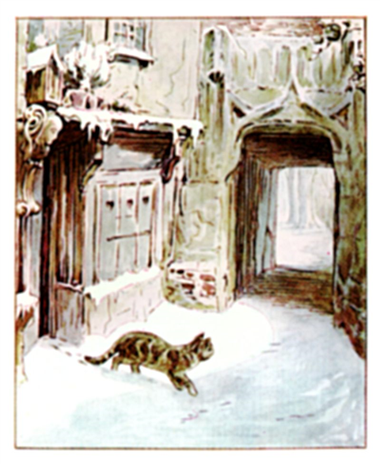
教会の 大時計が １２回 なると ―― まるで こだまのように ―― こたえる声が あちこちから。 それを 耳にした シンプキンは、 ふくやさんの おうちから 外へ 出て、 雪のなかを うろうろ。
グロスターの ありとある むかしながらの 木の おうちから、 クリスマスを よろこぶ それこそ 何千という おめでとうの 歌声が ひびきわたります ―― どこかで 聞いたことの ある なつかしい 歌が ほとんどですが、 わたくしも 聞いたことが ない 「ウィッティントンの ベル」といった 歌も あり。
だれより 早く 大声で オンドリが さけびます、 「おくさま、 起きて パイを お焼きなさい！」
「おー、 うきうきうき！」と ためいき まじりの シンプキン。
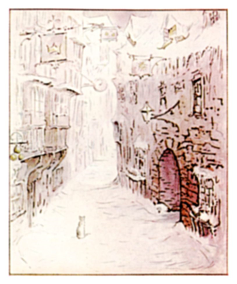
ただいま やねうらには あかりが ついていて、 ダンスを する もの音、 ネコたちも 通りの むこうから やってきます。
「へい、 おどる、 おどる、 ネコに フィドル！ グロスターの ネコたち みんなで ―― ぼくだけ のけものに して。」と シンプキン。
のき下では、 ムクドリや スズメが クリスマスの パイを うたい、 小ガラスは 教会の てっぺんで めざめて、 そして ま夜中だと いうのに ツグミと コマドリが さえずり、 あたりには 小鳥たちの 歌が ちゅんちゅん みちみちます。
でも かわいそうに、 はらぺこの シンプキンには ぜんぶが ちょっと 耳ざわり！
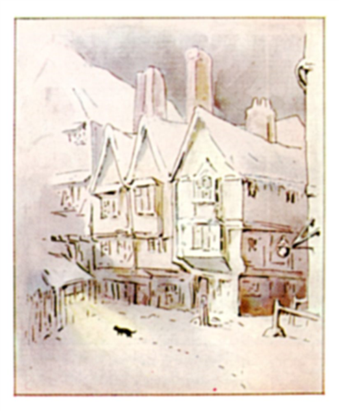
とりわけ 木の こうしまどの むこうから 聞こえてくる きんきん声に がまんできません。 たぶん そのぬしは コウモリでしょう、 なにせ あいつらは かなりの 小声ですし ―― それに 黒い森に いるときでも ねごとを 言ってたりしますからね、 グロスターの ふくやさんと おんなじで。
その歌声は、 いわくありげに こんなふう。
「ばず、と 青バエが ものいい、 はむ、と ハチが いう
ばずはむ、と ２ひきが 音を たてて、 われらも また！」
そうして シンプキンは、 ぼうしに ハチでも よってきたみたいに、 耳を ふりふり すすんでいきます。ばずはむ、と ２ひきが 音を たてて、 われらも また！」
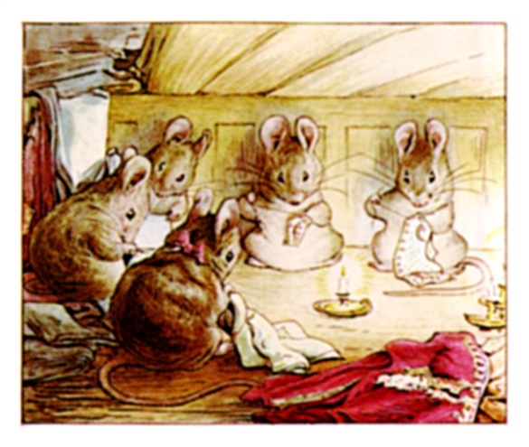
西門にある ふくやさんの お店からは あかりが もれていて、 シンプキンが すりよって まどから のぞくと、 なかは ろうそくで いっぱい。 それから 聞こえてきたのが、 はさみの ちょきちょき、 糸の ちくちく いう音、 さらには ネズミさんたちの たのしい 大きな 歌声が ――
「２４人の ふくやさん
マイマイを つかまえにいく
いちばんの つわものでも
そのしっぽを つかめない
つのを だした その子は
カイローの 牛のよう。
にげろ ふくやよ にげろ！ でなきゃ ぎゃくに やられちまうぞ！」
マイマイを つかまえにいく
いちばんの つわものでも
そのしっぽを つかめない
つのを だした その子は
カイローの 牛のよう。
にげろ ふくやよ にげろ！ でなきゃ ぎゃくに やられちまうぞ！」
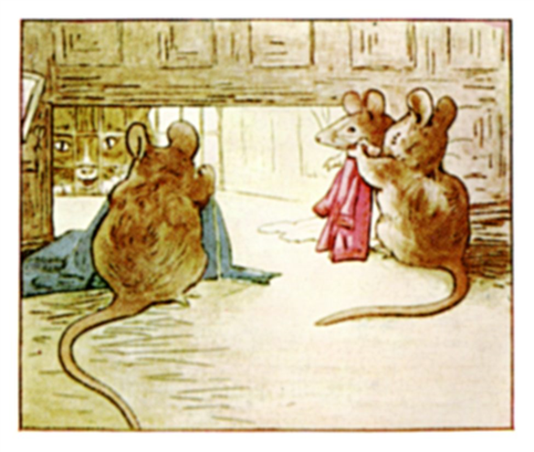
やすみなく ネズミさんたちの 歌は つづいていきます ――
「おくさまの からすむぎを ふるうのです
おくさまの こむぎこを ひくのです
クリのみに くわえましたらば
小１時間ほど ねかせましょう。」
「みゅー！ みゅー！」と 歌の じゃまを する シンプキン、 ドアを ひっかきます。 でも かぎは ふくやさんの まくらの下、 なかには 入れません。おくさまの こむぎこを ひくのです
クリのみに くわえましたらば
小１時間ほど ねかせましょう。」
ネズミさんたちは こばかに しつつ、 また べつの歌 ――
「３ひきの ネズミさんが すわって 糸まき
通りすがりの ネコちゃん のぞきこむ
何を してるの、 あなたたち？
だんなの コートを 作ってるんだ
糸切り てつだってあげようか？
けっこう、 頭を がぶりする つもりだろ？」
通りすがりの ネコちゃん のぞきこむ
何を してるの、 あなたたち？
だんなの コートを 作ってるんだ
糸切り てつだってあげようか？
けっこう、 頭を がぶりする つもりだろ？」
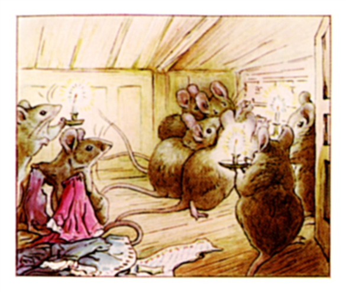
「みゅー！ みゅー！」と わめく シンプキン。「へい、 おどって うきうきかい？」というのが ネズミさんたちの おへんじ。
「へい おどって うきぴょんの ペットさん
ロンドンの あきんど ぜんしん まっ赤
えりは シルクで ふちどりは 金
おきんどたちは うかれて ねりあるき！」
みんな ゆびぬきを かちかち、 リズムを とって、 でも どの歌も まったく シンプキンには 気に入りません。ロンドンの あきんど ぜんしん まっ赤
えりは シルクで ふちどりは 金
おきんどたちは うかれて ねりあるき！」
「そのとき 買ったのは
土びんと 土なべ
まくらカバーに パジャマ
ひっくるめて はした金で――
それから 台どころの 戸だなに ちょん！」と さいごに つけたす やんちゃな ネズミさんたち。土びんと 土なべ
まくらカバーに パジャマ
ひっくるめて はした金で――
「みゅー！ がり！ がり！」と まどわくと とっくみあう シンプキン、 そのうち なかの ネズミさんたちが ぴょんと とびあがって、 みんな いっせいに ちゅうちゅうと さわぎだします。「糸が 足りない！ 糸が 足りない！」さらに、 まどの よろい戸を おろして、 シンプキンから 見えなくしました。
ですが それでも よろい戸の すきまを 通して、 ゆびぬきの かちかちする 音が 聞こえてきまして、 しかも ネズミさんたちの 歌声まで ――
「糸が 足りない！ 糸が 足りない！」
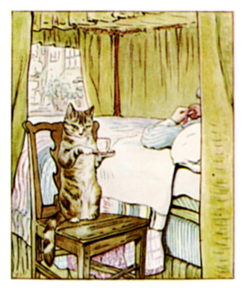
シンプキンは お店を あとにして、 おうちに かえって、 ひとり かんがえこみます。 気づくと、 かわいそうだった ふくやの おじいさんも ねつが 引いて、 すやすや ねむっていました。
それから シンプキンは つま先立ちで、 ティーポットのなかから きぬ糸の 入った こづつみを 取り出し、 月あかりで じっと にらみます。 すると 何だか はずかしくなってきましてね、 あの いい子ちゃんの ネズミさんたちに ひきかえ、 自分は なんて いじわるを したんだろうって！
朝、 ふくやさんが 目ざめると、 まず 目に とびこんできたのが、 パッチワークキルトの上に のった、 さくらんぼ色の きぬの より糸 １かせ、 そして ベッドわきに 立っていたのが、 ばつのわるそうな シンプキン！
「ああ、 ほつれそうなくらい へとへとだ。」という グロスターの ふくやさん。「だが もう 糸は 足りる！」
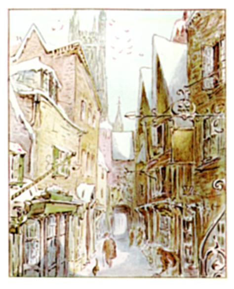
おひさまの日が 雪に 当たるころ、 おきあがった ふくやさんは きがえをして、 おもてへ 出ていきます。 先に 立って すすむ シンプキン。
ムクドリが やねに つきでた えんとつの上で さえずり、 ツグミや コマドリが うたいます ―― でも 歌は もう ただの かすかな音、 夜みたいに 歌声では ありません。
「ああ、」と ふくやさん。「糸は 足りる。 だが 元気が 足りない ―― 時間も 足りない ―― これでは ボタンあな ひとつくらいしか かがれんて。 なんせ もう クリスマスの朝なんだ！ お昼には グロスターの 町長が けっこんすると いうに ―― さくらんぼ色の コートは どこへやらだ。」
西門通りの ささやかな 店の 戸を あけると、 シンプキンは ネコらしく まってましたと ばかりに とびこみます。
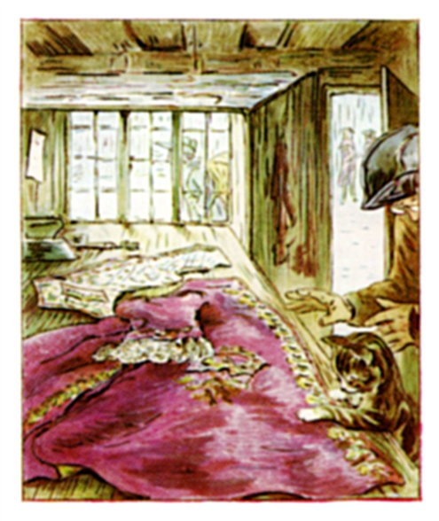
でも そこには 何も いません！ 茶ネズミたちも １ぴきたりとも！
たなは きれいに そうじされていて、 糸くずも きぬの 切れはしも みんな すっかり 片づいていまして、 ゆかにも 何も おちていません。
ところが さぎょう台の上には ―― おおなんと！ おもわず 声を あげる ふくやさん ―― そこには、 ぬのを きりそろえて おいてあっただけなのに ―― かわりに、 どこまでも うつくしい コートと、 きれいに ししゅうされた サテンの チョッキが ならんでいたのです。 こんな すてきなもの、 グロスターの 町長さんも はじめてでしょう！
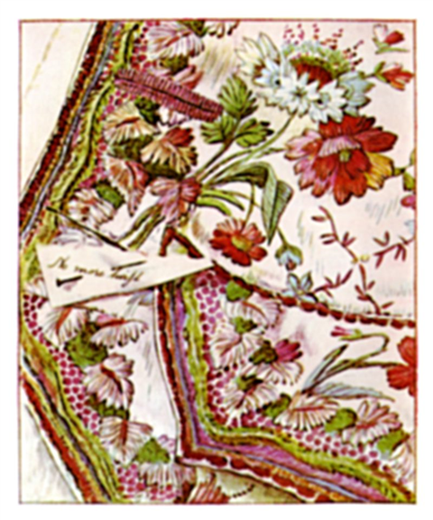
コートの ぬいとりには、 バラと パンジー、 それから チョッキには ケシと キクが あしらわれていて。
なにもかも できあがっていて ―― あと のこすは さくらんぼ色の ボタンあな ひとつのみ。 ボタンあなの 糸の 足りなくなった ところに、 紙切れが とめられていて、 こんな ことばが ちょろちょろした 文字で ――
糸が 足りない。
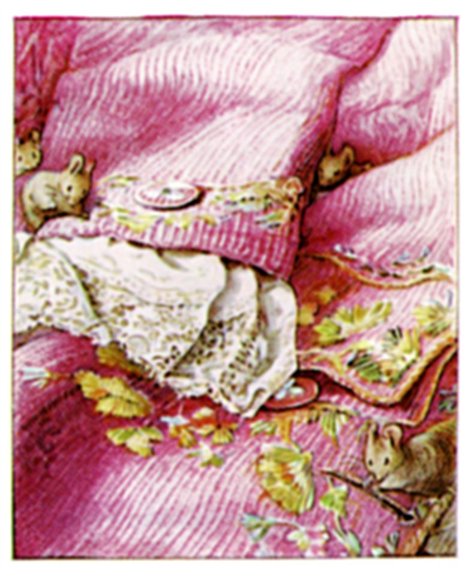
このときから やっと グロスターの ふくやさんにも 運が むいてきまして、 肉づきも よくなり、 お金も たくさん 入ってきました。
おじいさんが 作るのは それは だれにも まけない みごとな コートばかり、 グロスターの お金持ちの あきんどたちや、 あたりに すむ だんながたが こぞって ほしがるものと なりました。
こんな ひだひだ、 それに ししゅうつき カフス、 たれかざりは 見たことが ないとの うわさで！ でも 何よりの じまんは ボタンあなでした。
そのボタンあなの かがりかたは、 じつに きちっと ―― きちっとしていて ―― メガネを つけた おじいさんが まがったゆびで ゆびぬきつけて かがったとは 思えないくらい。
そのボタンあなの かがりかたは、 本当に 細かく ―― 細かくて ―― まるで ネズミさんたちが やったみたいなのでした！
（おしまい）